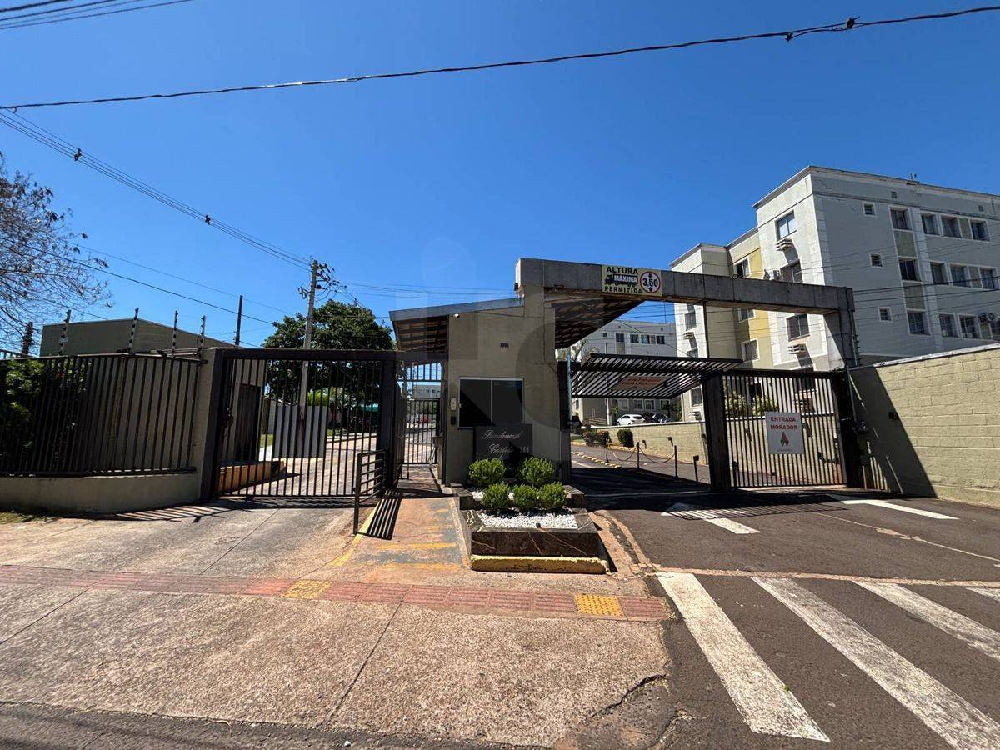
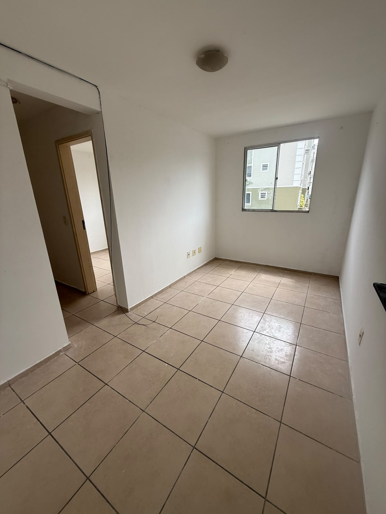
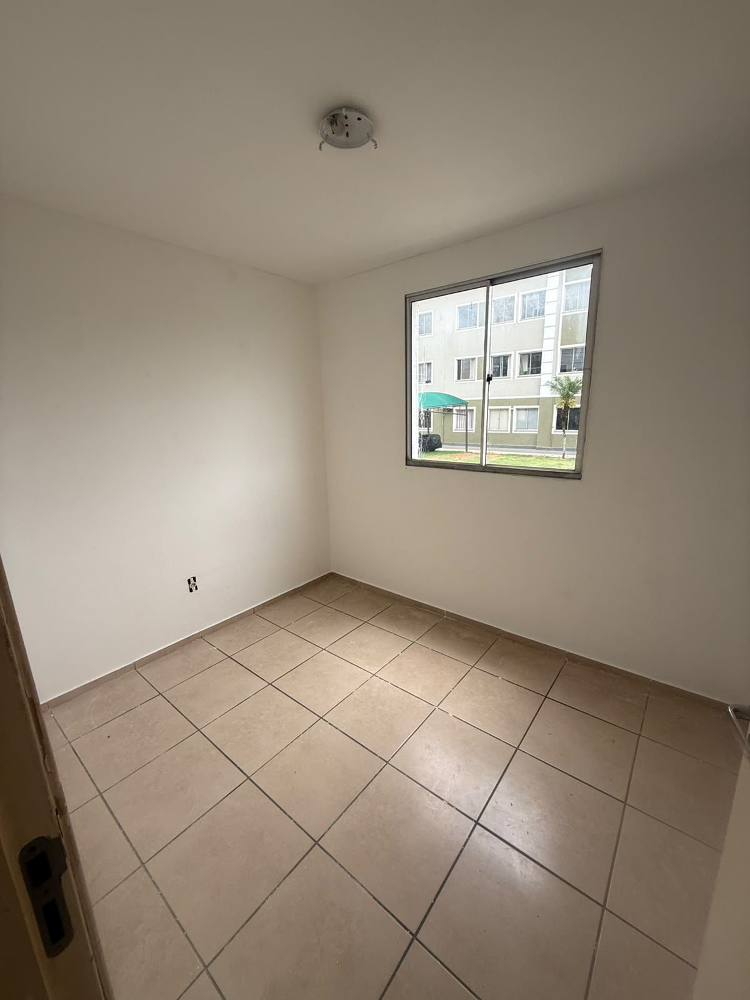
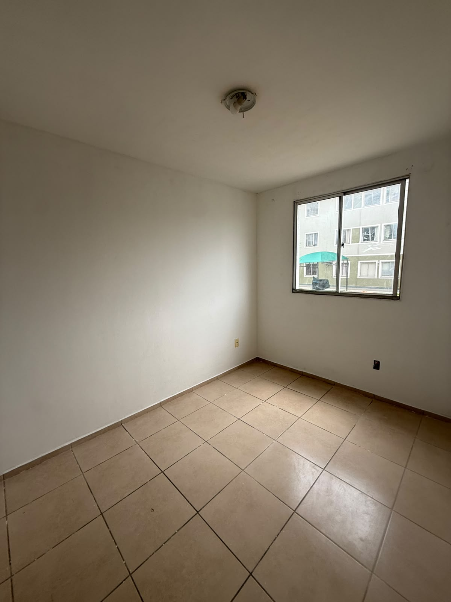
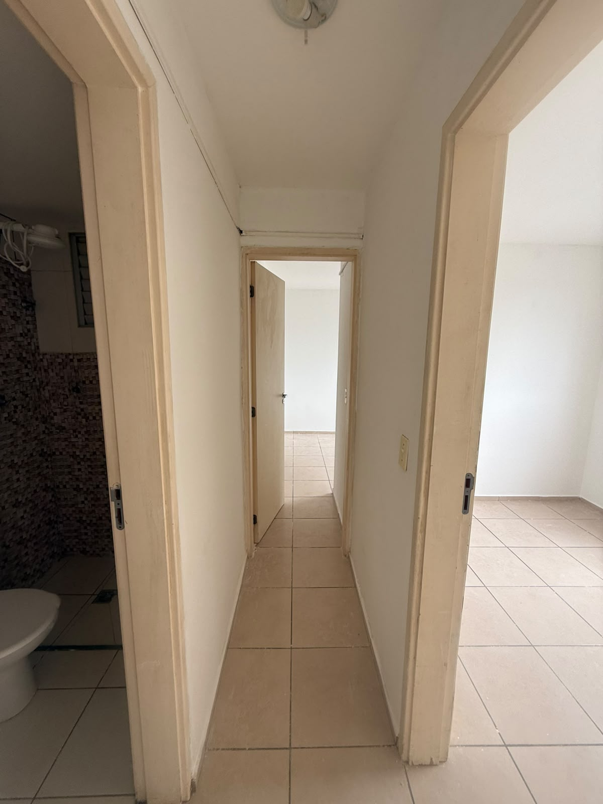
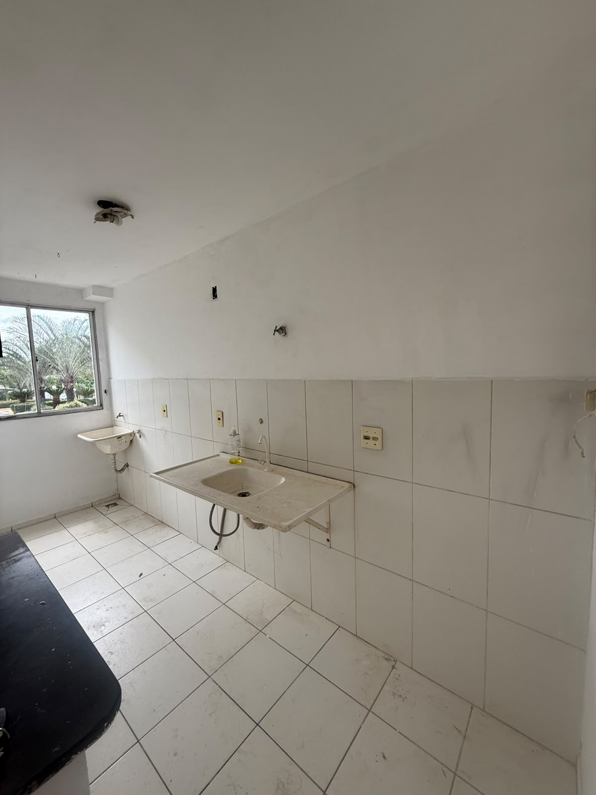
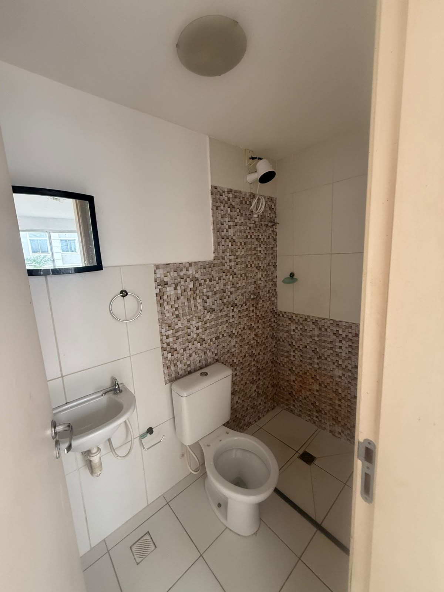

R$ 1.400/mês — água, gás, condomínio e IPTU inclusos
Residencial Parque Castelo de Luxemburgo, bloco 01, térreo, próximo à portaria e sem escadas. Dois dormitórios (um suíte), dois banheiros, cozinha com área de serviço e uma vaga. Área privativa de referência da tipologia: 46,18 m².
Avenida Senador Antônio Mendes Canale, 725 — Pioneiros, Campo Grande/MS. Próximo à Coca-Cola e à UFMS.







Felipe M. Yonaha Mendes — CRECI-MS 15588-F